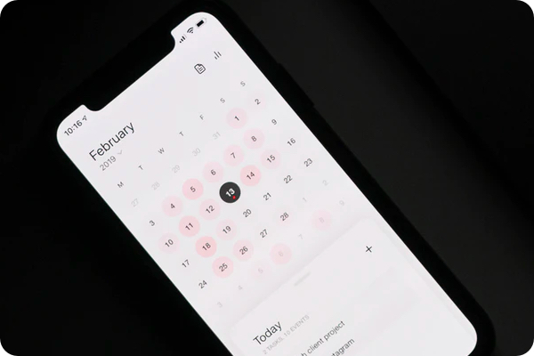
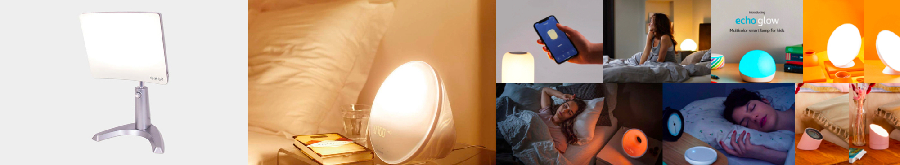
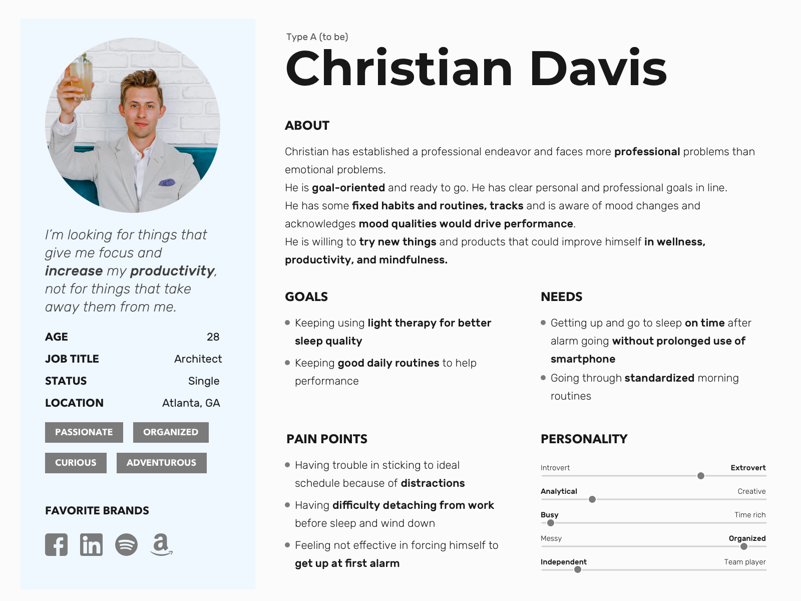
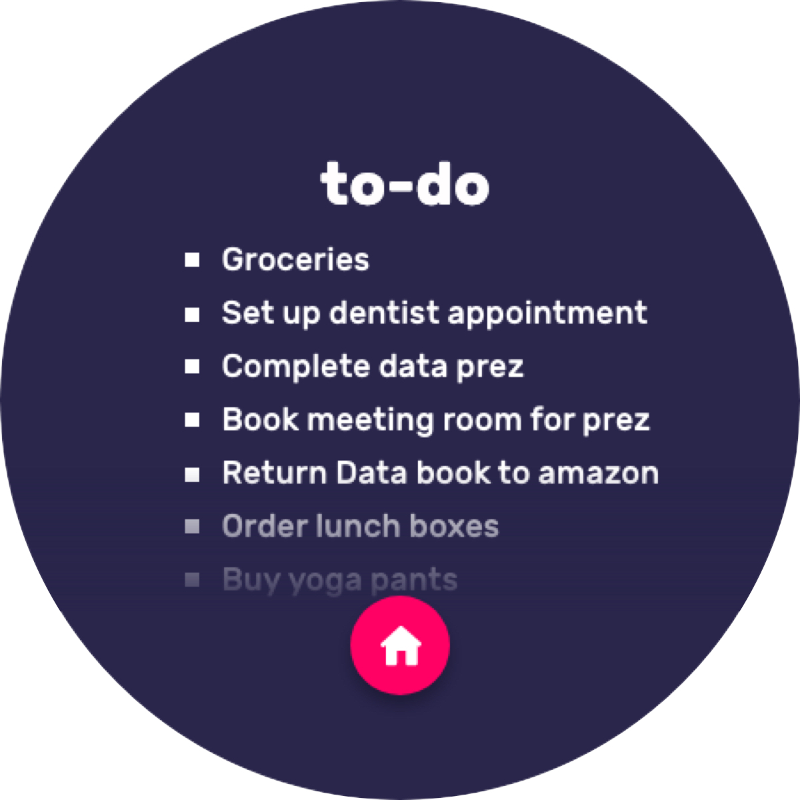
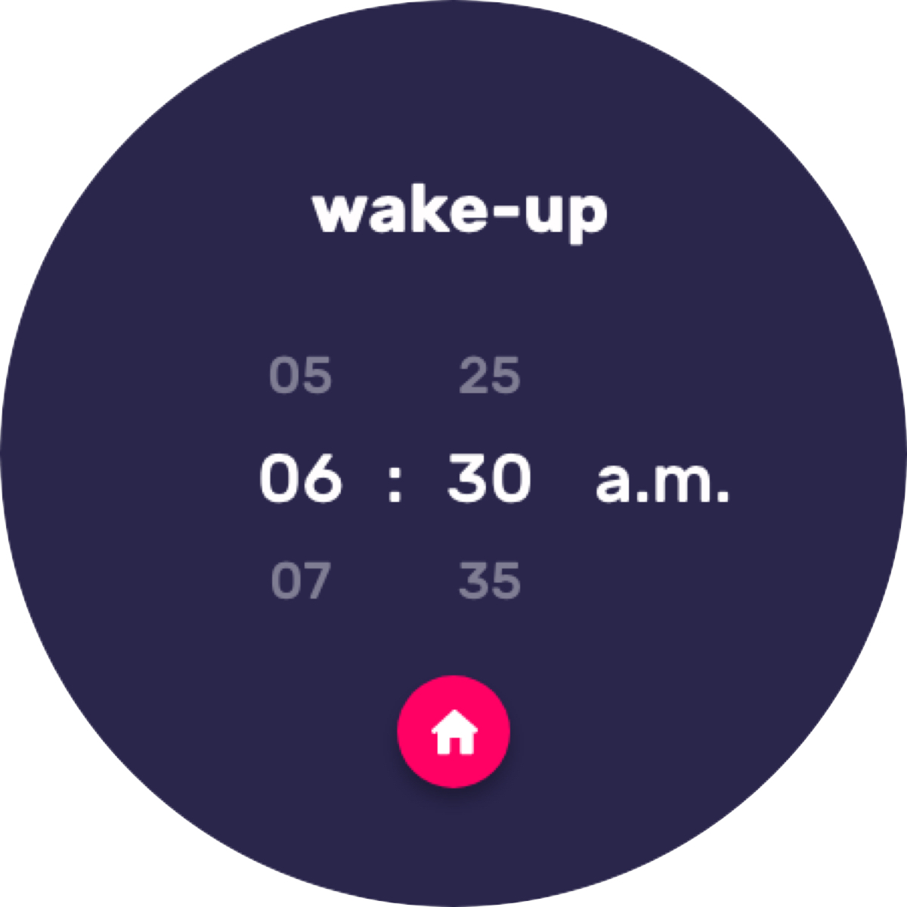
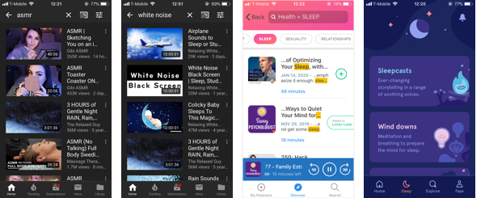
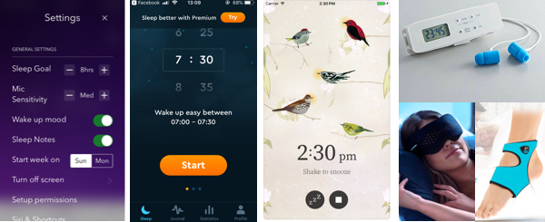
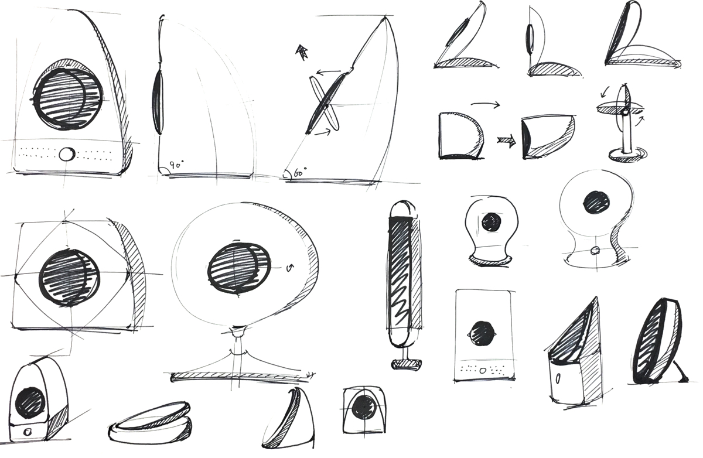
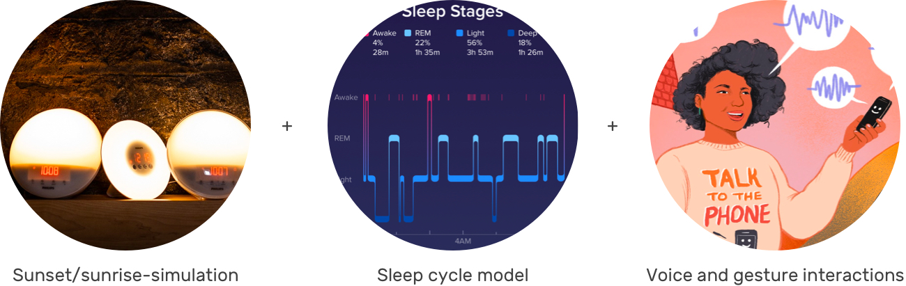

Overview
Lux is a startup company that helps to build on the belief that waking up should be more than an unavoidable, unpleasant routine.
Lux offers a personalized experience to assist in waking up and do it without compromising on aesthetics, form, or user-friendliness.
Discover
User Research
Lux believes
Our mornings should set the tone for the remainder of our day with energy and ease. And Lux is for people who no longer want to compromise on personal wellness for high performance.
Research Process
Lux's vision statement sets a theme for our research. But we still need to step back a bit to redefine the design problems by ourselves.
We recruited millennials and gen-z for doing interviews, personal diaries, and observations and synthesized a lot of insights to help to make design directions.
Research Findings
Lux's initial target user group is anyone who needs to wake up at a certain time and be highly functional—and wants to feel good while doing so. Their first target market was millennials, the most recent generation to join the workforce and the largest consumers of wellness products and services. These are individuals who desire to prove themselves professionally and personally without compromising on their health.
User Groups
Key Insights
Obstacle 1
The constant checking of the alarms time and volume wastes time and causes users affected by the brightness of the phone and to experience brief moments of unsure.
Goal 1
Users feel confident that they can wake up in the morning at the proper time to start a productive day.
Obstacle 2
Using phones and having self-reflection of daytime performance affect a timely and tranquil process of falling asleep.
Goal 2
Users should take lying on the bed as a clear division to wind down and stop using their phones.

Obstacle 3
The unplanned and prolonged phone time after waking up makes users disappointing since it wastes time from morning preparations.
Goal 3
Without snoozing alarms and scrolling down social media, a natural and calmly waking up makes users feel a good start of a day.

Refined Scope
High Level Problem
Actions users take to optimize their circle are not giving actionable feedback.
Define
Persona
Journey and problems
Problem 1

Problem 2

Problem 3
Problem 4
Goal
Help users to set ideal time point and optimize their circle
Design Opportunity
An interaction that help users to set goals and reflect their actions.
Ideat
Market Study
Initially, Lux believes that existing wake-aids are stress-inducing, unpleasant, and antiquated - they literally alarm your body awake.
In our user research, there are some other methods interviewees mentioned that could help them to relax, fall asleep and feel more motivated. We researched, tried and reviewed different methods for falling asleep and waking up, like Philips Hue Sunlight simulation light, Pillow sleep cycles alarm, sleep aid scent, and meditation sounds.
1. Meditations
The most popular ASMR sounds may require earbud earphones to listen and experience so it might not be comfortable for most users and more stressful because of unsure about hearing the alarm clock. In Youtube, you can't set a length of time for the episode but podcast and sleep sound apps do have this function which is helpful to reduce the anxiety of listening time.
2. Alarm and Timer APPs
Except for traditional alarms on the phone, there are two main categories of sleeping waken alarm clocks. Sleep hours alarm could make sure your sleep hours and wake you up until the ideal point has been achieved. Sleep cycle alarm would let you set an ideal waken point but wake you before the point at when you are in a surface sleep which is easier and less painful to wake up.
3. Light aid side device

For the sleep light products, there are some product requirements in common. A bigger surface that allows more light or higher luminescence to come out is more desirable. Not only use for waking up but has functions for music, meditation or reading light. An elegant product design that fits in urban and modern interior design is more favorable.
Refined Goal
Help users actively identify the correct actions and time that are actionable and able to give positive feedback, so they can optimize their behaviors.
Design Opportunity
A sleep wake up aid light with a touchable interface that gives users clear signifiers of the time, themes, and actions that they could refer to and be stick to.
Low-fi Mockups Testing
Featured comments
1. "I don't want to plan and adjust them all together every time I use it, maybe just give me what should I do next?"
2. "The hockey puck shape is adorable and portable so that I could bring it to the bathroom during I'm doing make-up. But I doubt if the surface is big enough to generate the light to wake me up".
3. "If it could be a substitute for my meditation subscription app that would be great. Like, playing some rain dropping sound while dimming down".
4. "I may just want to go to and fall asleep ASAP without distraction. Simpler, less is more".
Mid-fi Mockups

Sketching
Prototyping

Design
Solution
Coucou is for individuals who value beautiful technology that seamlessly integrates, simplifies, and optimizes their lifestyle and aesthetic.
Below are individual project.
Strategy
Physical Design Detalis

User Cases
#1 Notify you it's time to do a prep for sleep
#2 Wind dowm for sleep

#3 Wind down settings

#4 Return to sleep
#5 Wake up by light
#6 Notify to have morning routines

#7 Hurry for going

Final Design
Lux is not light therapy, nor are we an alarm clock.

Designed and coded by Faye Yifei Gong | All Rights Reserved | @fayegong.xyz© 2016-2019